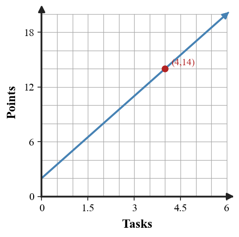
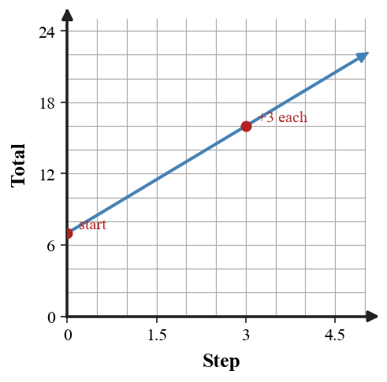

Multiple Representations of Relationships
Mathematical idea: A relationship stays the same when its input-output pattern is represented in different ways.
Today you will name inputs and outputs, build tables and equations from contexts, and use evidence to decide whether two representations agree. You will also critique claims that mix up starting values and repeated changes.
Learning Target
Learning Target: Students will connect tables, graphs, equations, and contexts that represent the same relationship.
I can statements
- I can construct a table, graph, equation, or context from another representation of the same relationship.
- I can use features in one representation to work with a related table, graph, equation, or context.
- I can determine whether two representations belong to the same relationship using evidence from values, rates, or patterns.
What's To Come
This is a long-range preview for future lessons. Do not solve it today. Instead, annotate it individually. Circle anything familiar, underline symbols or directions that seem important, and write notes about what information you think will be needed later.
As you annotate, ask yourself: What parts (words, symbols, graphs) do you KNOW? What parts look FAMILIAR? What parts look like jibberish?
Design a connected model for a short situation where a total begins at $6$ and changes by the same amount each step. Include a context, equation, four-row table, and graph on the blank coordinate plane. Make sure all four representations agree.

Intro
Directions
Read the introduction aloud with a partner or in a small group. As you read, annotate the text by highlighting important ideas, circling key vocabulary, and writing short notes about connections, questions, or predictions in the margins.
Many real situations connect one quantity to another. The input is usually the quantity you choose or count first, such as hours, tickets, notebooks, or steps. The output is the quantity that depends on that input, such as cost, distance, total points, or amount remaining.
A table organizes several input-output pairs so you can see how the output changes. An equation can show the same pattern by giving a rule for each input. When the output increases by the same amount each time the input increases by 1, that repeated change should appear in both the table and the equation.
Sometimes a representation looks reasonable until you compare it with another one. A graph shows starting value, direction, and steepness in a visual way. If one part starts at a different value or changes at a different rate, the mismatch becomes easier to notice.
The key representations in this section are tables, coordinate graphs, equations, rules, verbal contexts, and connections among them. Strong work does not stop after making one representation; it checks whether each representation tells the same story.
When you build a model from a context, decide which quantity is the input before you write numbers. Then use the situation to create a table, an equation, or a graph that matches the same input-output relationship.
Stop and Discuss
- In a relationship, what does the input usually tell us?
- How can a table and an equation show the same repeated change?
- Why might a graph help you catch a mismatch between a context and an equation?
To connect a context to a graph, name the input first and then ask what output belongs with that input.
For a club that starts with 2 points and earns 3 points per task, the rule is $$P=2+3t.$$
| Tasks $t$ | 0 | 1 | 2 | 4 |
|---|---|---|---|---|
| Points $P$ | 2 | 5 | 8 | 14 |

Context: The point $(4,14)$ means 4 tasks produce a total of 14 points.
Example 1: Name the Input and Output
A robotics team pays a registration fee and then pays for each replacement part it orders. The total cost depends on the number of parts ordered.
- Identify the input quantity.
- Identify the output quantity.
- Explain why total cost should be the output instead of the input.
You Try It 1: Name the Quantities
A school dance charges an entry fee and then a price for each snack ticket. The total paid depends on the number of snack tickets.
- Identify the input quantity.
- Identify the output quantity.
- Write one sentence explaining the dependency.
Stop and Discuss
- How did naming the input first make the YTI easier?
- What clue tells you which quantity depends on the other?
A fixed starting amount becomes the value when the input is 0, and a repeated amount becomes the change each step.
If a game card costs 5 dollars to activate and 2 dollars per play, the relationship is $$C=5+2p.$$
| Plays $p$ | 0 | 1 | 2 | 3 |
|---|---|---|---|---|
| Cost $C$ | 5 | 7 | 9 | 11 |

Context: The starting value 5 is the activation cost before any plays, and the 2 is the added cost for each play.
Example 2: Build a Table and Equation
A field trip company charges 12 dollars for a reservation and 6 dollars per student. Let $s$ be the number of students and $T$ be the total cost in dollars.
| $s$ | 0 | 1 | 2 | 3 |
|---|---|---|---|---|
| $T$ |
- Complete the table.
- Write an equation for $T$ in terms of $s$.
- What does the number 12 mean in the equation and graph?
You Try It 2: Create the Rule
A bike rental costs 9 dollars plus 4 dollars per hour. Let $h$ be hours and $C$ be total cost.
| $h$ | 0 | 1 | 2 | 3 |
|---|---|---|---|---|
| $C$ |
- Complete the table.
- Write an equation for $C$.
- Name the starting value and repeated change.
Stop and Discuss
- Where did the fixed fee appear in both the Example and the YTI?
- How would the graph change if the per-unit amount doubled?
Example 3: Write an Equation from a Table
The table shows a relationship where $x$ increases by 1 each column.
| $x$ | 0 | 1 | 2 | 3 |
|---|---|---|---|---|
| $y$ | 9 | 13 | 17 | 21 |
- What is the starting value?
- What is the repeated change?
- Write an equation for $y$ in terms of $x$ and explain how the table supports it.
You Try It 3: Equation from Values
The table shows a linear relationship.
| $x$ | 0 | 1 | 2 | 3 |
|---|---|---|---|---|
| $y$ | 6 | 11 | 16 | 21 |
- What is the repeated change?
- What is the output when $x=0$?
- Write an equation for the relationship.
Stop and Discuss
- What table evidence did you use before writing the equation?
- Why is checking $x=0$ useful?
In a rule like $y=b+mx$, the starting value $b$ is the output when $x=0$, while $m$ is the repeated change in output for each increase of 1 in the input.
| $x$ | 0 | 1 | 2 | 3 |
|---|---|---|---|---|
| $y=7+3x$ | 7 | 10 | 13 | 16 |

Context: If a total starts at 7 and adds 3 each step, the equation is $y=7+3x$, not $y=7x+3$.
Example 4: Critique a Mismatched Claim
A student is modeling the phrase "Start with 15 and add 4 each step."
Student claim: "The equation is $y=15x+4$."
- What does the 15 represent in the phrase?
- What does the 4 represent in the phrase?
- Critique the claim and write a better equation.
You Try It 4: Fix the Claim
A student models "Start with 20 and subtract 3 each step."
Student claim: "The equation is $y=20x-3$."
- What is the starting value?
- What is the repeated change?
- Revise the equation and explain the error.
Stop and Discuss
- What was the same mistake in both claims?
- How can a table with $x=0$ prevent this error?
Summary
A relationship can be shown with words, a table, an equation, or a graph, but the input-output pattern should stay consistent. When you move between representations, keep the same quantities and the same order of operations.
The starting value is the output when the input is 0, and the repeated change tells how much the output changes each step. Tables and graphs make both features visible.
A common error is switching the starting value and the repeated change when writing an equation.
Strong understanding means you can create a representation, explain what each number means, and use another representation to check that your model agrees with the context.
Common Mistakes
- Reversing input and output. Why it is tempting: both quantities appear in the context. What to check instead: which quantity is chosen first and which quantity depends on it.
- Switching start and change. Why it is tempting: both numbers are important. What to check instead: the value at input 0 before writing the multiplier.
- Graphing points out of order. Why it is tempting: tables list pairs close together. What to check instead: each x-value matched with its own output.
- Writing a rule from one point only. Why it is tempting: one point feels like enough evidence. What to check instead: the repeated change across multiple rows.
- Ignoring context meaning. Why it is tempting: equations can look correct symbolically. What to check instead: what each number represents in the situation.
Optional Future Task Reflection
Look back at the future task. Do not solve it yet. Highlight one part that makes more sense now than it did at the beginning. Circle one part that still feels unfamiliar. Write one sentence about what representation you would look at first.
A school store charges a fixed setup fee and then a price for each notebook. In this context, identify the input quantity and the output quantity.
A babysitter charges \$10 to travel to the house and \$8 per hour. Complete the table and write an equation for total cost $C$ after $h$ hours.
| $h$ | 0 | 1 | 2 | 3 |
|---|---|---|---|---|
| $C$ |
What is one idea about multiple representations of relationships you understand better now than at the start of class? Write at least one complete sentence.
What is one thing about multiple representations of relationships you still want to understand or practice? Be specific — name the idea, not just "everything."